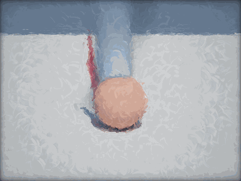
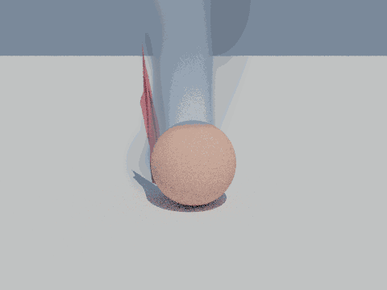

Interactive application
Interactive
Overview · selected highlights
Realtime Graphics on CPU
A browser scene whose smoke, cloth, tracing and image finishing are computed on the CPU. The deliberately pixelated presentation exposes practical costs: SIMD acceleration, parallel work, accumulation and quality choices remain connected to the complete frame.
ShadeRasterizeInspect
- v
Evolve the scene
Advance Eulerian smoke and constrained cloth with explicit simulation settings.
- L
Trace the image
Update geometry and compute surface and coarse volume transport.
- f
Finish the pixels
Apply reconstruction, denoising and optional painterly or vintage effects.
- t
Measure the frame
Hold the workload fixed while comparing threads, SIMD and stage costs.
A faster kernel only helps when it improves the end-to-end workload.

